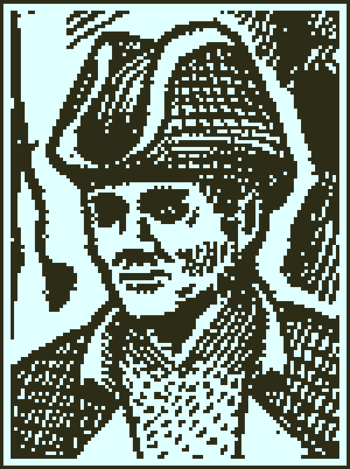

Interactive Obra Dinn Crew List
Help figure out the fates of the crew members onboard the Obra Dinn!
A legal copy of Obra Dinn is required to play the game, this website is just a tool to bring collaborative investigation to the game.
Missing Features:
| # | Portrait | Name | Quality | Origin | Fate |
|---|---|---|---|---|---|
| 1 |  | Robert Witterel | Captain | England | |
| 2 | William Hoscut | First Mate | Scotland | ||
| 3 | Edward Nichols | Second Mate | England | ||
| 4 | Martin Perrott | Third Mate | England | ||
| 5 | John Davies | Fourth Mate | England | ||
| 6 | Alfred Klestil | Bosun | Austria | ||
| 7 | Charles Miner | Bosun's Mate | France | ||
| 8 | Henry Evans | Surgeon | England | ||
| 9 | James Wallace | Surgeon's mate | England | ||
| 10 | Winston Smith | Carpenter | America | ||
| 11 | Marcus Gibbs | Carpenter's Mate | America | ||
| 12 | Thomas Sefton | Cook | England | ||
| 13 | Emil O'Farrell | Butcher | Ireland | ||
| 14 | Christian Wolff | Gunner | Austria | ||
| 15 | Olus Wiater | Gunner's Mate | Poland | ||
| 16 | Duncan McKay | Purser | Scotland | ||
| 17 | Finley Dalton | Helmsman | England | ||
| 18 | Edward Spratt | Artist | England | ||
| 19 | Abigail Hoscut Witterel | Passenger | Scotland | ||
| 20 | Nunzio Pasqua | Passenger | Italy | ||
| 21 | Emily Jackson | Passenger | England | ||
| 22 | Jane Bird | Passenger | England | ||
| 23 | Bun-Lan Lim | Passenger | Formosa | ||
| 24 | It-Beng Sia | Passenger | Formosa | ||
| 25 | Chioh Tan | Passenger | Formosa | ||
| 26 | Hok-Seng Lau | Passenger | Formosa | ||
| 27 | Zungi Sathi | Ship's Steward | India | ||
| 28 | Fillip Dahl | Captain's Steward | Sweden | ||
| 29 | Paul Moss | 1st Mate's Steward | Wales | ||
| 30 | Samuel Galligan | 2nd Mate's Steward | Ireland | ||
| 31 | Roderick Andersen | 3rd Mate's Steward | England | ||
| 32 | Davey James | 4th Mate's Steward | England | ||
| 33 | Peter Milroy | Midshipman | England | ||
| 34 | Thomas Lanke | Midshipman | England | ||
| 35 | Charles Hershtik | Midshipman | England | ||
| 36 | Omid Gul | Topman | Persia | ||
| 37 | Timothy Butement | Topman | Scotland | ||
| 38 | Huang Li | Topman | China | ||
| 39 | Jie Zhang | Topman | China | ||
| 40 | Li Hong | Topman | China | ||
| 41 | Wei Lee | Topman | China | ||
| 42 | Nicholas Botterill | Topman | England | ||
| 43 | Maba | Topman | New Guinea | ||
| 44 | Lewis Walker | Topman | England | ||
| 45 | Leonid Volkov | Topman | Russia | ||
| 46 | Alarcus Nikishin | Seaman | Russia | ||
| 47 | Aleksei Toporov | Seaman | Russia | ||
| 48 | Nathan Peters | Seaman | England | ||
| 49 | Lars Linde | Seaman | Denmark | ||
| 50 | John Naples | Seaman | Wales | ||
| 51 | Renfred Rajub | Seaman | India | ||
| 52 | Abraham Akbar | Seaman | India | ||
| 53 | William Wasim | Seaman | India | ||
| 54 | Soloman Syed | Seaman | India | ||
| 55 | Hamadou Diom | Seaman | Siera Leona | ||
| 56 | Henry Brennan | Seaman | England | ||
| 57 | Alexander Booth | Seaman | England | ||
| 58 | Patrick O'Hagan | Seaman | Ireland | ||
| 59 | George Shirley | Seaman | England | ||
| 60 | Samuel Peters | Seaman | England |